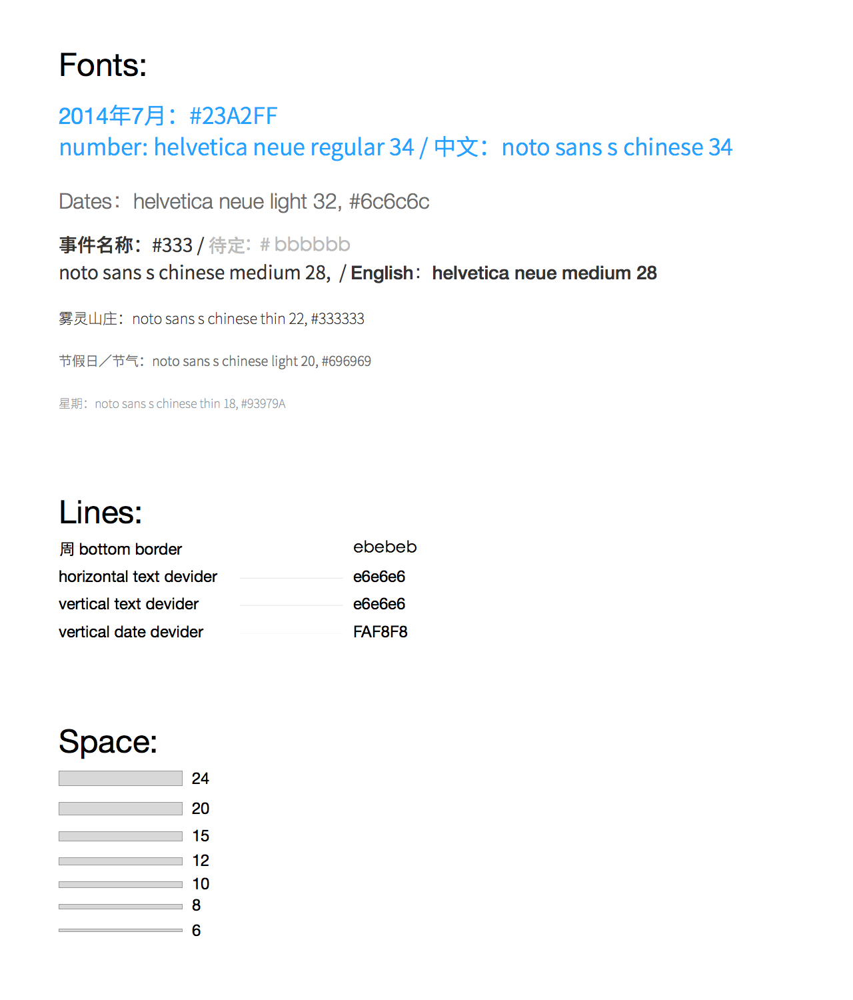

添加日程需求文档
1 概述
添加日程分为智能添加和完整添加两部分，智能添加可以通过文字和语音识别出时间，完整添加和原生日历一致。
如果用户通过点击添加按钮添加日程，进入智能添加页面，没有默认时间；如果通过点击周视图和日视图添加日程，则进入智能添加页面之后，显示选中的时间。逻辑图如下所示

2 添加日程交互流程
2.1 通过添加按钮添加日程
2.1.1 智能添加交互动画
如果无法观看视频，请安装最新版的Safari
2.1.2 完整添加交互动画
如果无法观看视频，请安装最新版的Safari
！！注意：在动画中从选择提醒等页面返回到添加页面时会自动跳到顶部，实际操作过程中，不需要自动跳转到顶部
2.1.3 添加日程相关备注
- 默认进入智能添加页面
- 默认日程类别为工作
- 智能添加提供“主题”和“添加好友”两个按钮
- 文本框提示输入规范
- 点击文本框，开始输入。同时下方出现模拟的时间区域
- 输入第一个字时，模拟时间区域出现
- 模拟时间区域日程的颜色和所选类别保持一致
- 随着输入文字的增加，模拟的时间自动变化
- 如果输入时间有误，则需要进入完整添加页面修改
- 若是通过周视图或者日视图添加日程
- 直接显示模拟时间区域，开始时间为选中的时间
- 提供时长选择按钮，默认时长为1小时
2.2 通过点击周视图和日视图添加日程
2.3 添加重复性日程
2.4 添加日程关联好友
3 添加功能视觉效果及标注
视觉设计的guide line如下图所示：

视觉效果图和标注如下图所示：
视觉设计细节还未最终敲定，以下图片暂供参考